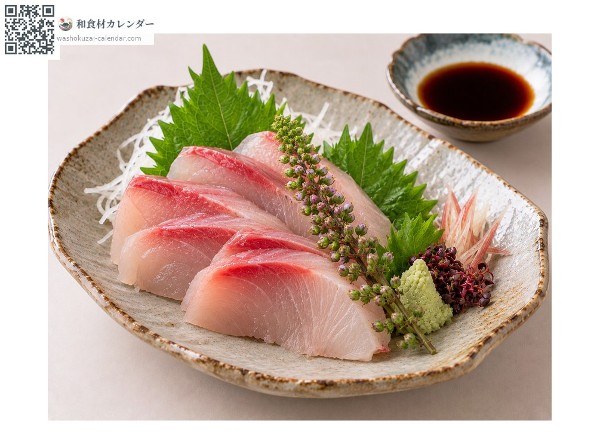
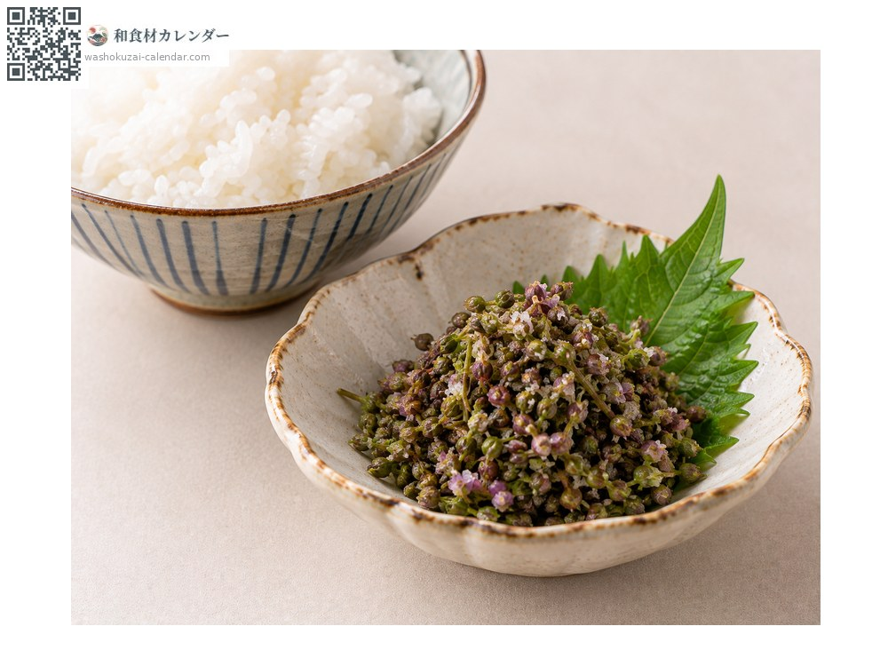
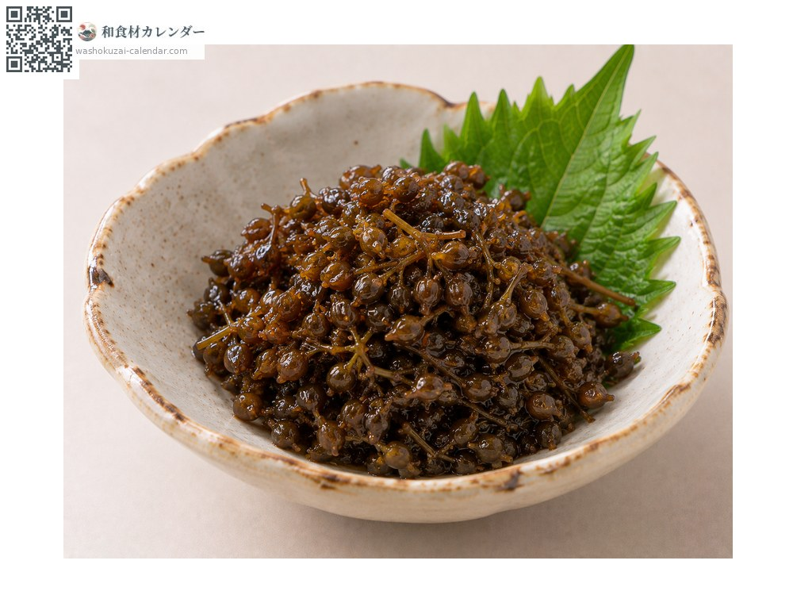
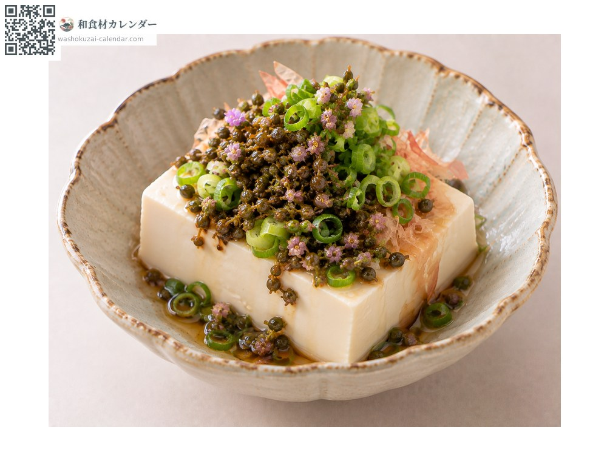

Vegetables
Shiso seed spike
穂紫蘇 ほじそ hojiso
Also known ashojiso
At its best in Sep, Oct

When it is at its best
Jan
Feb
Mar
Apr
May
Jun
Jul
Aug
Sep
Oct
Nov
Dec
In seasonAvailable
How to cook

As a sashimi garnish
Stripped into the soy sauce; a firmer scent than the flower spike.

Salt-cured
Cured in salt to keep, and eaten with rice.

Tsukudani (simmered in sweet soy)
Simmered in sweet soy, keeping the pop of the seeds.

As a garnish
The stripped seeds over chilled tofu or noodles.
How to choose
Seeds plump but not yet hardened, with a deep green colour.
Storage
Wrap in damp paper, seal and refrigerate. Salt-curing allows long storage.
Main areas
Good to know
The spike once flowering has finished and the seeds have set. The scent is stronger than the flower spike, and the seeds add texture. Stripped and cured in salt or simmered, they keep well. The same plant at a later stage than the flower spike.